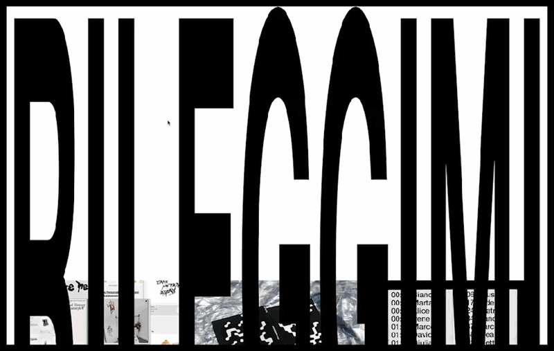
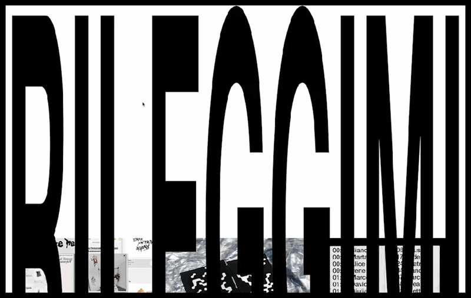
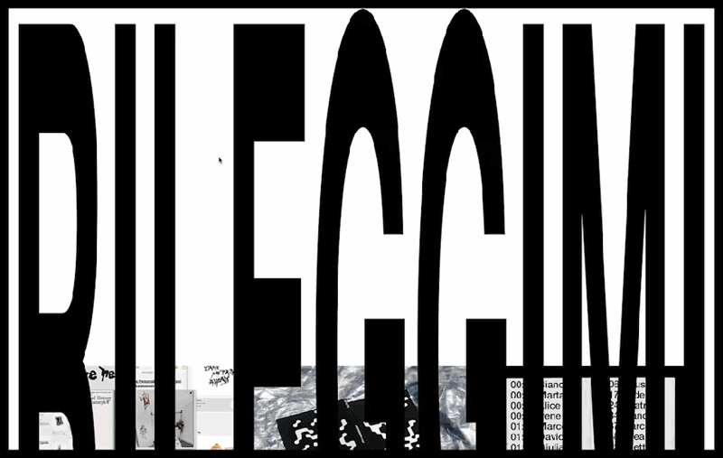

@enrico.isidori
enrico.isidori@gmail.com
CV
Visual designer and artist born in Rome, currently studying Communication Design at Politecnico di Milano. His work was exhibited at the international design festival Graphic Days 2022 in Turin and at Triennale Milano in 2023.
Visual designer e artista nato a Roma, attualmente studia Design della comunicazione al Politecnico di Milano. I suoi lavori sono stati esposti al festival internazionale di design Graphic Days 2022 a Torino e in Triennale Milano nel 2023.

Rileggimi
2022
Web Design
Identity and website for Rileggimi: group exhibition, on the occasion of ELO 2022 – International Conference on Electronic Literature, featuring a series of intermedial and transmedia artifacts made during the Sociology of Cultural and Communicative Processes Course a.y. 2021/2022, Department of Design, Politecnico di Milano.
Identità e sito per Rileggimi: mostra collettiva, in occasione dell’ELO 2022 – Conferenza Internazionale di Letteratura Elettronica, che propone una serie di artefatti intermediali e transmediali realizzati durante il Corso di Sociologia dei Processi Culturali e Comunicativi a.a. 2021/2022, Dipartimento del Design, Politecnico di Milano.


Draw a line from one side of the page to the other
2022
Book Design
This book is a collection of strangers' lines on a blank sheet of paper. "Draw a line from one side of the page to the other", this is the instruction 100 bypassers were given along with the reminder to freely express themselves on the surface. Where one line ends, another begins - they are individual expressions and a single participatory work. To complete the book, the owner of each copy is asked to draw their own line on the cover, thus becoming part of the project. The book has a soundtrack generated by associating the lines with the frequency of the sound. By scrolling through the pages and listening to the corresponding sound, the reader takes a journey into people's emotions. It was selected and exhibited at Dock Dora and Cavallerizza Reale during the Italian graphic design festival GRAPHIC DAYS in Turin.
Questo libro è una raccolta di linee di sconosciuti su un foglio bianco. "Draw a line from one side of the page to the other" è l'istruzione data a 100 passanti invitati a esprimersi liberamente sulla superficie. Nel punto in cui finisce una linea, ne nasce un’altra – sono singole espressioni e un’unica opera partecipativa. Per completare il libro, si chiede al proprietario di ogni copia di disegnare la propria linea sulla copertina, diventando così parte del progetto. Il libro ha una colonna sonora generata associando le linee alla frequenza del suono. Scorrendo le pagine e ascoltando il suono corrispondente, il lettore compie un viaggio nelle emozioni delle persone. È stato selezionato e esposto ai Dock Dora e alla Cavallerizza Reale in occasione del festival di grafica italiano GRAPHIC DAYS a Torino.


SPECTA®
2023
Speculative Design
We are surrounded by screens pervaded by images about climate change that provoke us ecoanxiety. Specta aims to be your personal silencer of eco-anxiety. Studies and research based on the rock’s millennial knowledge, prove that climate change has always been there and always will be; that our biocentric view is limited; and that eco-anxiety is a meaningless feeling. Through Specta, it is possible to watch the same events related to climate change from the perspective of the rocks, seen as calming stratifications, and enter into a state of contemplation.
Siamo circondati da schermi pervasi da immagini sul cambiamento climatico che provocano in noi eco-ansia. Specta si propone di essere il tuo personale silenziatore di eco-ansia. Studi e ricerche basati sulla conoscenza millenaria delle rocce, provano che il cambiamento climatico c'è sempre stato e ci sarà sempre; che la nostra visione biocentrica è limitata e che l'eco-ansia è un sentimento inutile. Attraverso Specta è possibile osservare gli stessi eventi legati al cambiamento climatico dalla prospettiva delle rocce, viste come calmanti stratificazioni, ed entrare in uno stato di contemplazione.


Break the silence
2020
Research
Book Design
Iconographic and social research on public service communication against AIDS. The project is an overview of the creative choices found in 40 years of campaigns on the subject. It is divided into eight chapters dedicated to each of the languages, or communication styles, identified by the sociologist Giovanna Gadotti and the publicist Roberto Bernocchi: aggressive, informative, dramatic, prescriptive, emotional, reassuring, humorous, and provocative. The research recounts highlights how public service communication was the main cure for the epidemic and how in several campaigns it was necessary to be transgressive in order to break the silence. This work was conceived, written and designed as a group together with Marta Gaggi and Bianca Buratti.
Ricerca iconografica e sociale sulla comunicazione di pubblica utilità contro l’AIDS. Il progetto è una panoramica delle scelte creative riscontrate in 40 anni di campagne sul tema. Si articola in otto capitoli dedicati a ciascuno dei linguaggi, o stili comunicativi, individuati dalla sociologa Giovanna Gadotti e dal pubblicitario Roberto Bernocchi: aggressivo, informativo, drammatico, responsabilizzante, commovente, rassicurante, umoristico e provocatorio. La ricerca racconta come la comunicazione di pubblica utilità sia stata la cura principale dell’epidemia e come in diverse campagne sia stato necessario essere trasgressivi per rompere il silenzio. Il lavoro è stato ideato, scritto e progettato in gruppo insieme a Marta Gaggi e Bianca Buratti.

Imago: The object-magazine
2022
Research
Research, reproduction and reinterpretation of the artifacts of the 1960s Italian magazine Imago. Relayed in the course of History of Visual Communication at the Politecnico di Milano.
Ricerca, riproduzione e reinterpretazione degli artefatti della rivista italiana degli anni sessanta Imago. Realizzato durante il corso di Storia della Comunicazione Visiva del Politecnico di Milano
Due dadi
2020
Made from two white plastic dice and then laser printed, they present themselves as altered objects, others: they are one alternative among many possible ones. Each thing could be any other, but it presents itself as absolute: "A miracle that does not amaze as much as it should: the hand has in truth less than six fingers, yet more than four" Szymborska.
Realizzati a partire da due dadi in plastica bianca e successivamente stampati a laser, si presentano come oggetti alterati, altri: sono una alternativa tra le tante possibili. Ogni cosa potrebbe essere qualunque altra, ma si presenta come assoluta: "Un miracolo che non stupisce quanto dovrebbe: la mano ha in verità meno di sei dita, però più di quattro". Szymborska.


249
2020
249 are the possibilities of filling a 7 x 7 table. It is a series of mostly invisible digital compositions. Through a program one can see some compositions and their title.
249 sono le possibilità di riempimento di una tabella 7 x 7. È una serie di composizioni digitali per lo più invisibili. Tramite un programma si possono vedere alcune composizioni e il loro titolo.
64
2021
Digital reinterpretation of the work "64" by Aldo Spinelli; there is only one combination of switches that lights the lamp.
Reinterpretazione digitale dell'opera "64" di Aldo Spinelli; esiste solo una combinazione di interruttori che accende la lampada.
A reinterpretation of Henri de Toulouse-Lautrec's In the bed, the kiss made by HP-Print-F5-Photosmart 7520 as it was running out of ink.
Una reinterpretazione di Al letto, Il bacio di Henri de Toulouse-Lautrec realizzata da HP-Print-F5-Photosmart 7520 mentre stava finendo l'inchiostro.
photograph [foh-tuh-graf, -grahf]
1. noun: a picture produced by photography.
@enrico.isidori
enrico.isidori@gmail.com
Visual designer and artist born in Rome, currently studying Communication Design at Politecnico di Milano. His work was exhibited at the international design festival Graphic Days 2022 in Turin and at Triennale Milano in 2023.
Visual designer e artista nato a Roma, attualmente studia Design della comunicazione al Politecnico di Milano. I suoi lavori sono stati esposti al festival internazionale di design Graphic Days 2022 a Torino e in Triennale Milano nel 2023.
{kind=link}